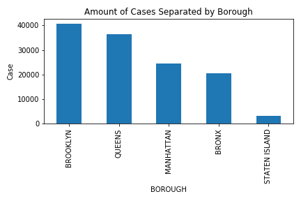
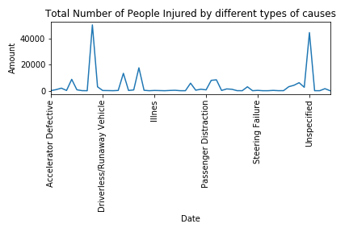
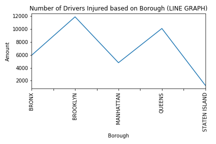

The reason I am intrested in this data is because of how useful it is to New York. It is important to study the trend of collisions that happen in NY so that the general public can be made more aware in order to stay safe, and also so that it may become possible that a means of prevention can be created to make our streets safer for the public.
The data is filtered from January 1st 2019, to Current datest 2019. (Will be updated)
We use the describe function in order to check whether we have missing data. These values usually show up as NaN for not availiable. We see that there is some NaN values that show up for some data. This could be because it was not recorded either accidentaly or on purpose. Or the case that
PERSONS refers to those that were directly involved in the collisions, the drivers and/or
passengers.
PEDESTRIANS refers to those that were involved in the collisions, someone who is outside of the
vehicle during time of collision.
An outlier is defined as an observation that lies an abnormal distance from other values in a random sample from a population. The keyword here is abnormal. If we take a look over at the "Separated by Zip Code graph, we see that there are plotted values that look like they're outliers.
However, those points are actually supposed to be included because they represent necessary data for our models. Each point is repsenting a mark where there have been most reported cases within certain zip codes.
This data does not contain outliers, however it is important to note that zip codes contain many streets within them that intertwine between boroughs, so it would be difficult to make the theory that the amount of injury or deaths correspond to
There is missing data in this data set. IF we look at the data head, we see a bunch of NaNs values.
It's important to note that we should not remove these attributes from this dataframe because it is an essential part that describes the data. There are definitely instances where data could and should have been recorded, but the majority of the NaN values are from an abscence of Contributing Factors. There are cases where vehicles collided but not more than just two at a time, so these fields are left blank for these rows.